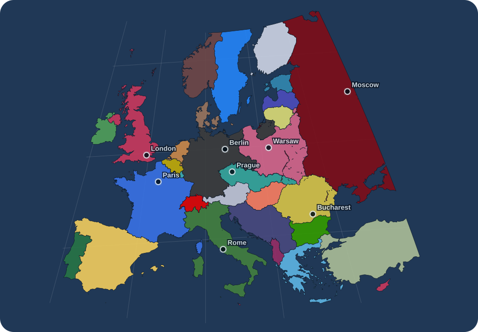
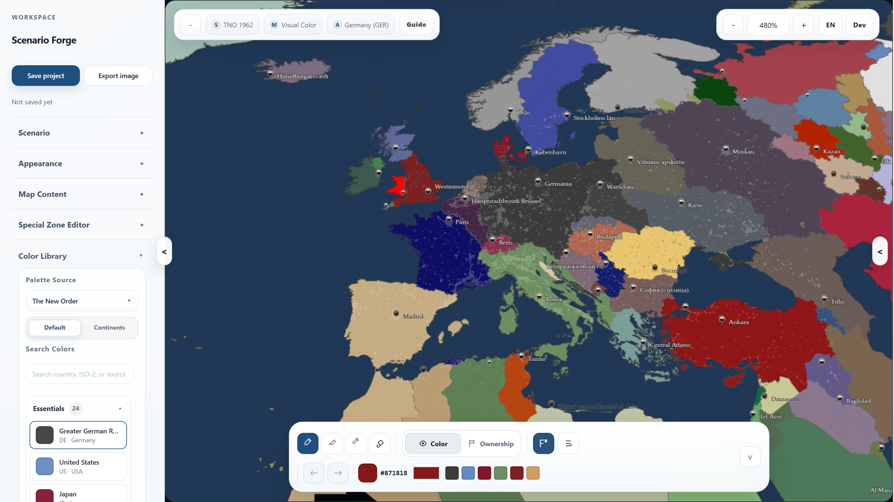
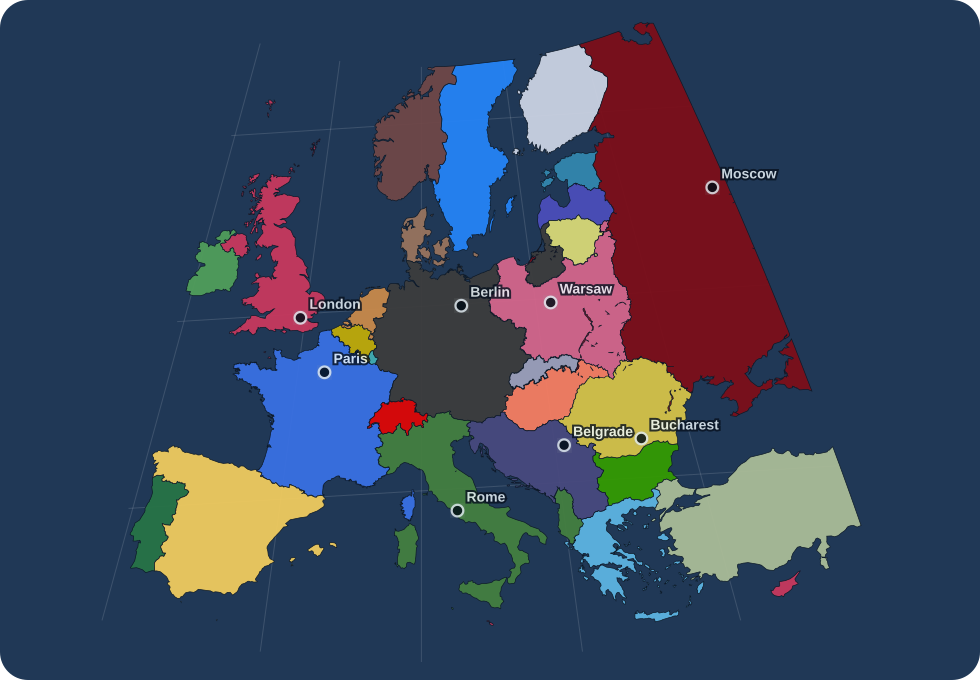
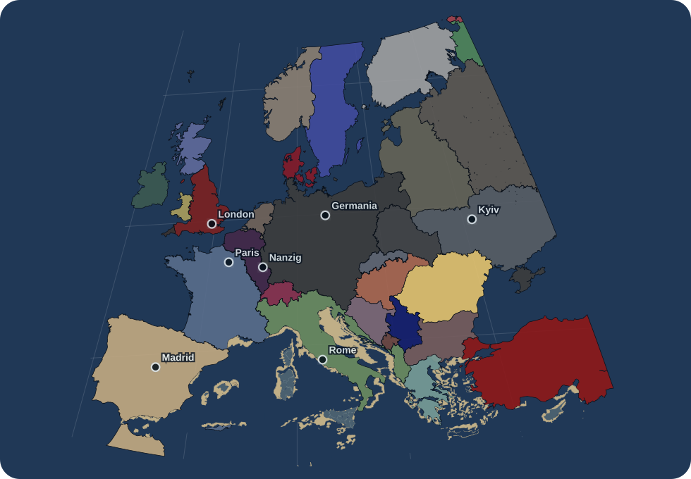
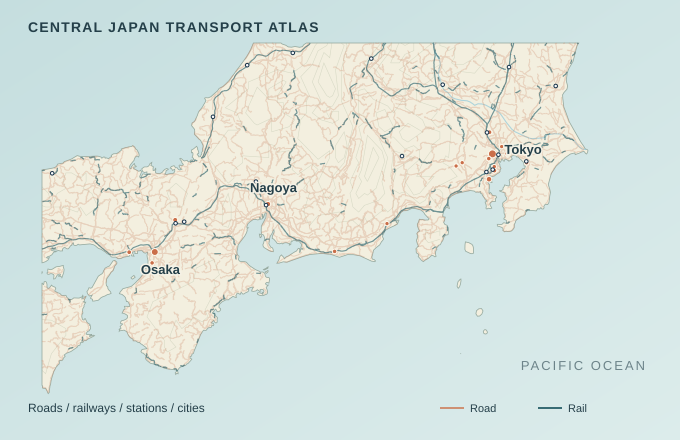
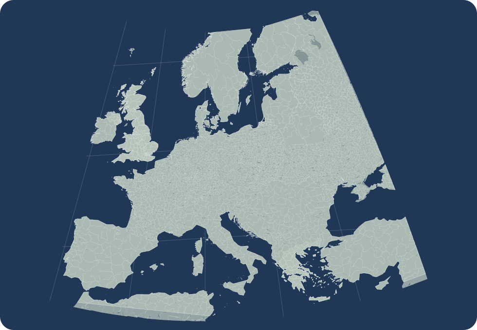
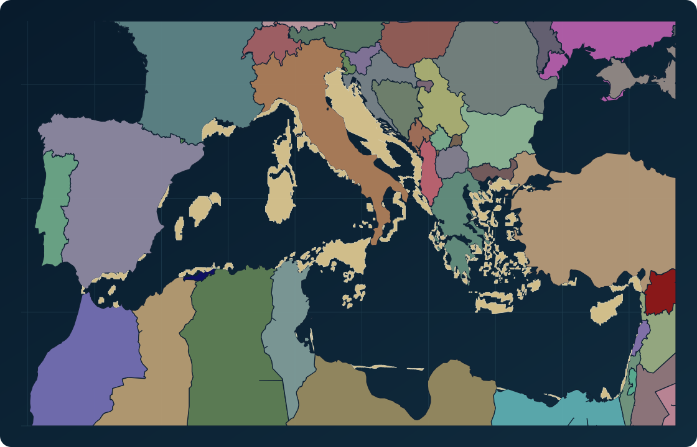

HOI4 / 1936
A mapmaking studio for imagined worlds
Build alternate histories, redraw borders, and bring your world into focus. A political map editor, right in your browser.

Selected maps
Explore scenario and transport maps, then open an editable sample to make it your own.
Compare scenario borders, explore transport, or inspect the data behind each map.

HOI4 / 1936

HOI4 / 1939

TNO / 1962

Central Japan local transport atlas
Roads, rail, and stations set against rivers and terrain.
Start from a sample in the editor, or download its project file.
Editor links open the sample with the Guide panel so you can edit, export, or download the original JSON.

01 Blank Map starter blank_base
05 TNO 1962 Atlantropa briefing tno_1962From idea to map
Choose a starting point, shape the details, and take your map with you.
The map begins from a scenario frame with known ownership and geography.
Product capabilities
Political boundaries, geographic detail, and the finishing touches.
Edit ownership, control, frontlines, and special regions across five public baselines.
Set palettes, borders, labels, and legends. Arrange layers to bring the right details forward.
Add roads, rail, cities, terrain, rivers, and night lights.
Export PNG or JPG at 1×–4×. Save an editable JSON project to pick up where you left off.
Current boundaries
Use political and context layers, save editable project JSON, and export PNG/JPG snapshots at 1x–4x scale.
HGO validation plus Cloud Saves and community workflows run through the local creator setup.
Shared project spaces, permissioned publishing, and cloud collaboration remain a future direction. Availability and release dates remain unannounced.
Interactive preview
Four pre-generated WebP layers form an interactive preview that separates source records from routes selected for a readable map.
Japan transport preview


This preview layer is unavailable right now.
The preview selects these routes from 5,899 road and rail source features; the featured Central Japan local transport atlas uses its own 165-route local extent.
Selected cities tie the routes to familiar regional hubs.
The terrain view selects checked-in contour and river lines inside the preview extent.
The night layer combines a Black Marble grid sample with historical city anchors.
Evidence and provenance
The three visible outputs link to checked-in metadata, source records, and the license boundary that applies to code, data, and derived assets.
724 rendered Atlantropa features and 30 dissolved country owners · Mediterranean bbox · scenario output · metadata schema 1 · sample manifest updated 2026-06-30.
2,626 source political features per scenario · shared Central/Eastern Europe bbox · comparison output · metadata schema 1 · sample manifest updated 2026-06-30.
165 rendered routes (95 road + 70 rail) and 18 major stations · 134.1–141.5°E / 33.2–36.8°N · local atlas output · metadata schema 1 · sample manifest updated 2026-06-30.
Scenario Forge code and documentation use the MIT License. Third-party datasets and derived assets retain their own source terms and provenance records.
Evidence explorer
Switch among checked-in political, rail, city-label, capital-anchor, and day-night layers for the HOI4 1936 Europe extent.
The map colors European territory through Scenario Forge's HOI4 1936 ownership table and country palette.
Layer metadata is unavailable; showing the generated map.
FAQ
Scenario Forge is a scenario-first map workbench for editing political state, composing geographic context, and exporting presentation maps.
Current source families include Natural Earth, geoBoundaries, GeoNames, NOAA ETOPO, NASA Black Marble, OpenStreetMap, Geofabrik, and country transport sources. Each visible output links to its checked-in metadata and provenance path.
The public workbench is a static browser application. HGO validation, larger data refreshes, Cloud Saves, and community workflows belong to the local/developer setup.
Export PNG or JPG at 1×–4×, within the image-size and memory limits. Map geometry is rendered for the output resolution. Save a JSON project to keep editing; the gallery also provides its generated maps as SVG.
Roads and rail are the strongest current public transport paths. Airports and ports provide overview context; mineral resources, energy, industry, and logistics remain preview/workbench families.
Scenario Forge code and documentation are released under the MIT License. Third-party datasets and derived assets retain their own source terms and provenance records. Check each sample’s source links before redistributing data-derived assets.
Open the workbench
Open the editor and start with a map.
{kind=link}
{kind=link}
{kind=link}
{kind=link}